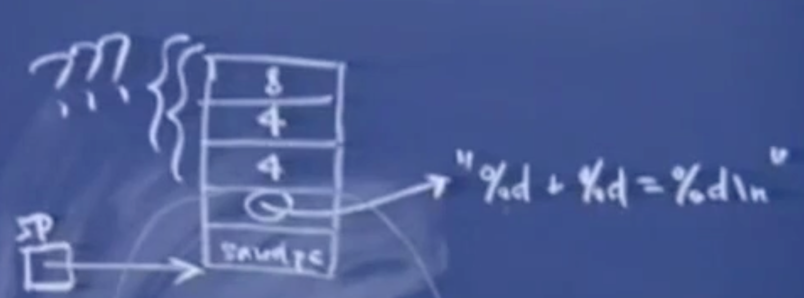
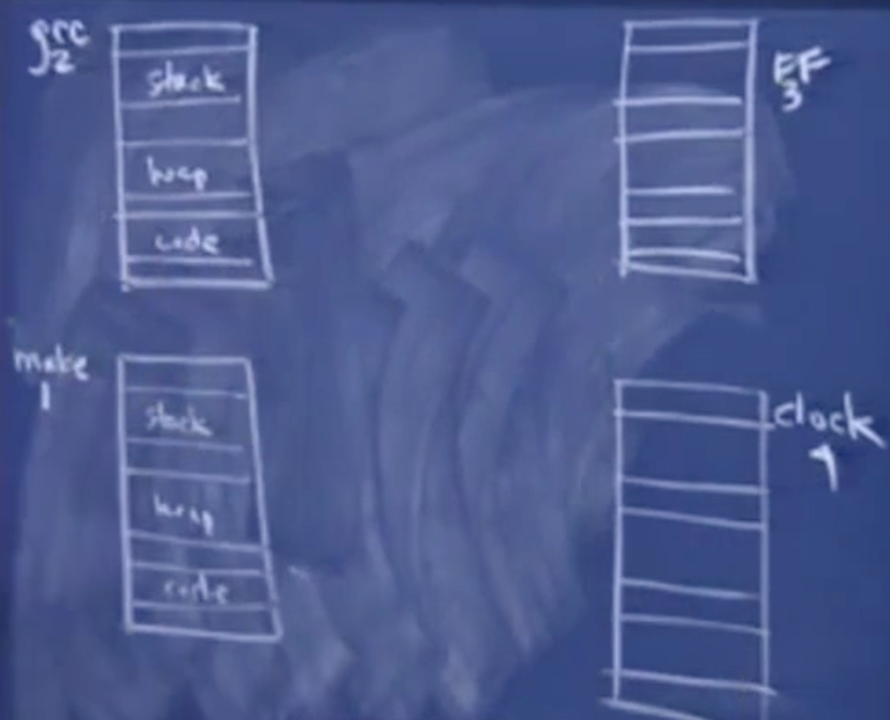

# 斯坦福编程范式 CS107_14
# 上节课的例子可能没有讲清
void foo(){ | |
int array[4]; | |
int i; | |
for(i=0;i<=4;i++) | |
array[i] -= 4; | |
} |
执行上述内容，无意间会影响到 saved PC，saved PC 的值刚好减去 4，减去 4 后便会指向 CALL
# 再看一个例子
int main(){ | |
DeclareAndInitArray(); | |
PrintArray(); | |
} | |
void DeclareAndInitArray(){ | |
int array[100]; | |
int i; | |
for(i=0;i<100;i++){ | |
array[i] = i; | |
} | |
} | |
void InitArray(){ | |
int array[100]; | |
int i; | |
for(i=0;i<100;i++) | |
printf("%d\n",array[i]); | |
} |
这段代码虽然是想讲内存内容进行初始化并进行输出，但是因为没有运用全局变量，全部是在函数内部的局部变量进行操作的，所以并不算正确，但是却能运行出正确的结果。因为在函数对内存空间进行操作返回后，内存中的内容不会被清除，所以再继续调用打印函数后，能输出这些内存地址中的内容。虽然运行结果正确，可以算作是一种讨巧的方法。相当于提前申请了一系列另类的参数，后续便可以直接进行调用。
# printf 函数（参数在空间的分布特点）
这里的 … 意思是可以添加任意数量，任意类型的参数。printf 的返回值是成功解析的占位符的个数。对于 printf("Hello\n") 会返回 0，对于 printf("%d+%d=%d",4,4,8) 会返回 3。如果 printf 错误的话，就会返回 - 1。
int printf(const char * control,...) |
现在可以解释为什么函数压入参数是从右往左的，最右边是第零参数，第零个参数会在最下面，第一个参数会在它上面。
对于下述代码，编译器会计算参数个数，并计算出需要让栈指针减去多少个字节为参数提供空间。当 SP 指向了 saved PC 后，printf 函数不知道在 char * 之上还有多少参数。printf 解析器会对第一个字符串进行分析，每当碰到一个 % d，就会知道，哦！这上方有 4 个字节应该被解释成 int 类型的参数… 通过上述的过程对参数的个数和类型进行判断。这与我们压入参数到栈中的顺序是一致，从右到左，最后一个参数首先进栈。如下图所示，上方为栈底。
printf("%d+%d=%d",4,4,8); |

# 结构体的参数在空间中的特点
struct base{ | |
int code; | |
}; | |
struct type_one{ | |
int code; | |
... | |
};//type_one 中所有元素的值都为 1 | |
struct type_two{ | |
int code; | |
};//type_two 中所有元素的值都为 2 |
假设我有一个 指向 base 的指针，那么我可以根据 code 的值为 1 或者 2 来将这个指针转换为 type_one 类型或者 type_two 类型。对于 windows 中也有类似的结构体对应关系，比如网络，IPv4 和 IPv6 进行匹配不同的结构体。** 那么现在说明为什么结构体变量或类变量的第一个成员域必须是最低地址。** 这并不是必须的，但大多数编译器都是这么实现的。因为将第一个变量如果位于高地址即栈底的话，那么久无法根据第一个变量的值进行匹配结构体的类型，那么我们就无从知晓整个结构体变量的基地址的距离了。
# 稍微讲讲进程切换
怎么让两个程序看起来在同时运行。
假设我们有这四个应用程序，它们都有 3 个段，栈、堆和代码段，这些段并不相同，这些都是虚拟内存，映射到不同真实内存中。将这四个进程定义为 1，2，3，4。它们都假定有足够大的空间来建立一个足够大的栈，足够大的堆来满足这个程序的需求。它们或许有相同地址的虚拟地址，但在物理地址上是不同的。
操作系统中有内存管理器，用来建立表格，将虚拟内存映射到真实内存中。 任何对虚拟地址的操作会最终映射为对真实地址的操作，并且知道这部分真实地址是由某个线程所拥有的。

让我们来只考虑 GCC 和 make 程序，它们两个互相插入并进行运行，以实现同步运行。对于更多的程序同时运行，只要处理器能很快的在线程之间进行切换。
# 是否有可能在一个单线程中同时运行两个函数
可以。如在 iTunes 中购买了 3 首歌并进行下载。它们看起来是 3 首同时下载，但实际上也是互相插入的进行运行，并下载。 假设是两首歌吧，那就是两个函数，两个函数都会有对应的汇编代码，这时程序的栈段会被分为更小的子段。 它们共享一个堆，共享一个 malloc 函数，都从相同的内存池中获得内存。在代码段，只有一个代码的拷贝，它是只读的。
假设我们下面的程序模拟的是一个航班出售的 100 张票。sellTicket 的意思是代理卖了 15 张票，最后这个程序实际上卖了 150 张票。 下节课将把 sellTicket 改造成一个具有 10 个线程的函数。
int main(){ | |
int numAgents = 10; | |
for(int i=0;i<10;i++){ | |
sellTicket(i,15); | |
} | |
} |